Securing Servers Using Honeypots and IP Blocking
This project walks through a full SOC-style workflow: deploying a Windows OpenSSH honeypot, simulating SSH attacks, detecting activity in logs, and mitigating by blocking the attacker IP with Windows Firewall.
1. Overview
Public-facing SSH services are common targets for brute-force and credential-stuffing attacks. In this lab, I deployed a Windows OpenSSH honeypot, generated SSH activity from a Kali attacker machine, validated logging for SIEM ingestion, and implemented mitigation using Windows Defender Firewall.
This exercise demonstrates:
- Deployment of a Windows OpenSSH honeypot
- Verification of SSH logging for SIEM ingestion
- Simulation of SSH connection attempts from Kali Linux
- Detection of attacker activity in Event Viewer logs
- Blocking the attacker IP using Windows Firewall
- Exporting logs for SIEM engineers
2. Installing OpenSSH Server on Windows
2.1 Verify OpenSSH availability
Get-WindowsCapability -Online | Where-Object Name -like 'OpenSSH*'
2.2 Install OpenSSH Server
Add-WindowsCapability -Online -Name OpenSSH.Server~~~~0.0.1.0
2.3 Start and enable the SSH service
Start-Service sshd
Set-Service -Name sshd -StartupType Automatic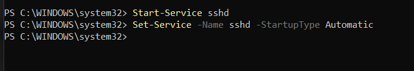
2.4 Confirm service status
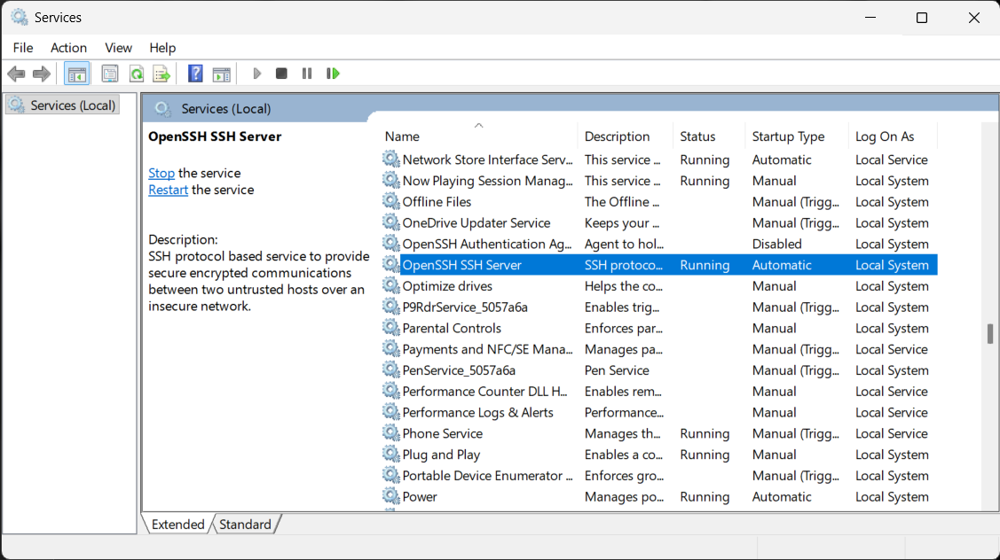
3. Configure and verify logging
3.1 Ensure DefaultShell registry key exists
New-ItemProperty -Path "HKLM:\SOFTWARE\OpenSSH" `
-Name "DefaultShell" `
-Value "C:\Windows\System32\WindowsPowerShell\v1.0\powershell.exe" `
-PropertyType String -Force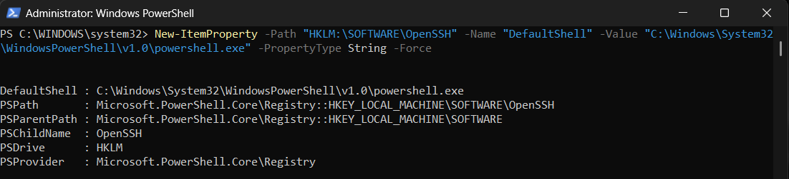
3.2 Locate SSH logs in Event Viewer

4. Simulate SSH attack from Kali
4.1 Successful SSH login
ssh sshlab@192.168.1.216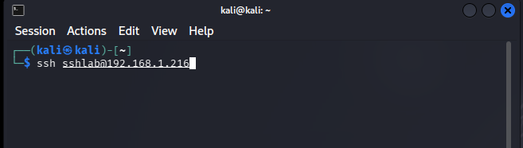
P@ssw0rd123!
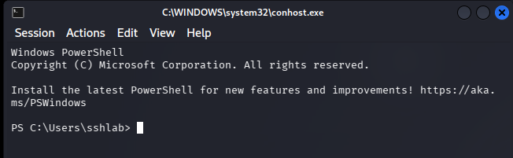
4.2 Failed SSH login attempts
ssh sshlab@192.168.1.216
Permission denied...
5. Detect the attack in Windows logs
5.1 Identify the source IP in OpenSSH logs


5.2 Correlate with Security log events

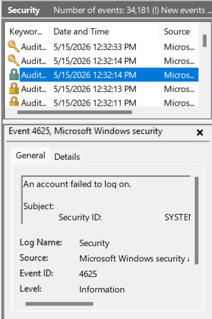
6. Mitigation: Block the attacker IP
wf.msc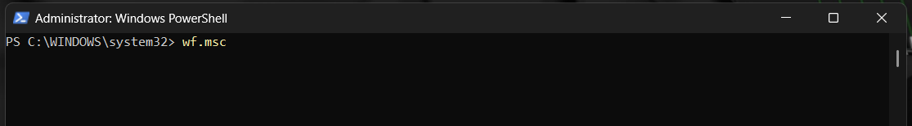

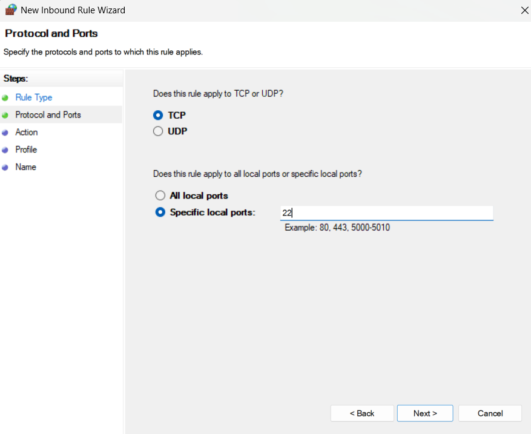
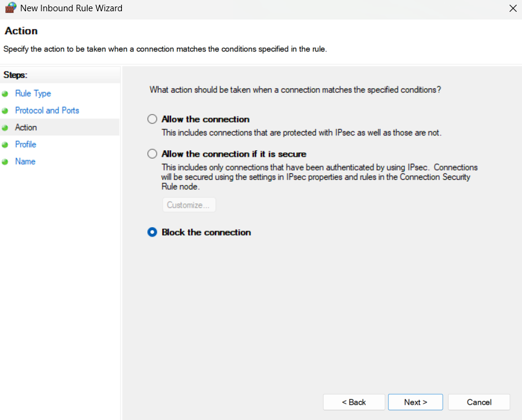
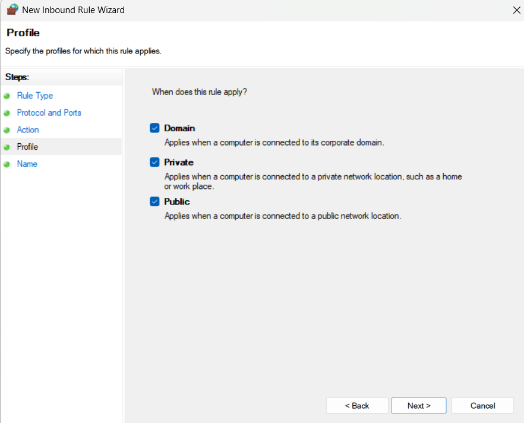
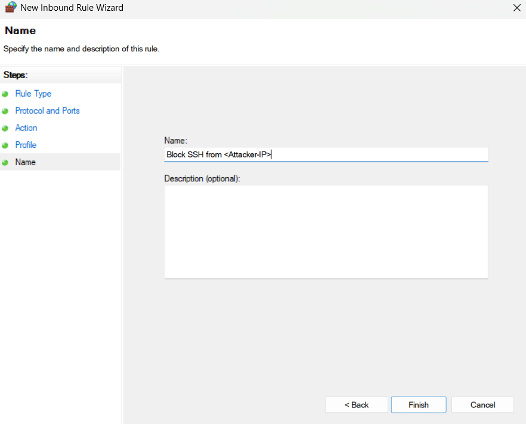
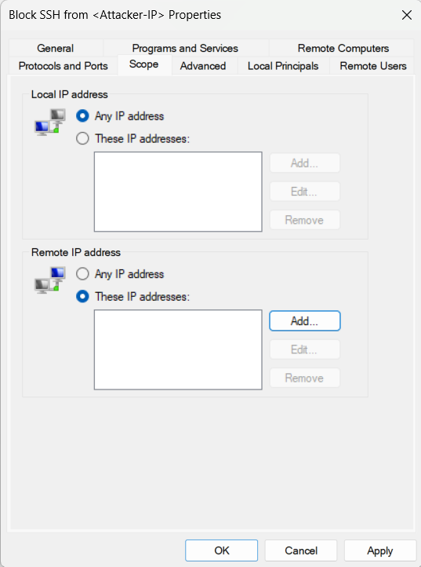
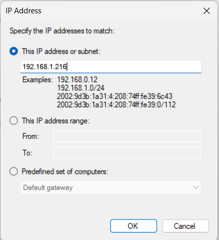
7. Demonstrate the rule in action
ssh sshlab@192.168.1.216
ssh: connect to host 192.168.1.216 port 22: Connection timed out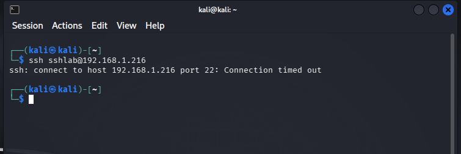
8. Final summary
This project demonstrates a realistic SOC workflow around securing SSH services exposed to untrusted networks. Starting from a default Windows installation, I:
- Installed and configured a Windows OpenSSH honeypot
- Verified SSH logging for potential SIEM ingestion
- Simulated both successful and failed SSH logins from a Kali attacker machine
- Identified attacker activity and source IP in Event Viewer
- Implemented mitigation using Windows Defender Firewall
- Validated that further SSH attempts from the attacker IP were blocked